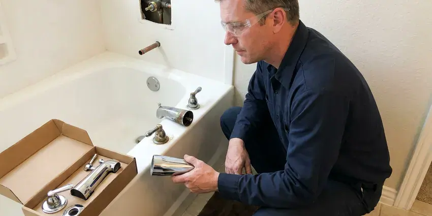

Faucet Replacement in Cedar Falls, IA
Upgrade your kitchen or bath with a new faucet installed by pros. We replace faucets across Cedar Falls, IA with flat-rate pricing and old-fixture removal.
- Same-Day Faucet Replacement
- Upfront Pricing
- Quality Fixtures
- Licensed, Insured Plumbers

Professional Faucet Replacement Services Available Now in Cedar Falls, IA.
Call KFR Plumbing today for a free estimate on your new faucet.
Your Local Source for Faucet Replacement in Cedar Falls, IA
KFR Plumbing specializes in all types of faucet replacement, from leaky kitchen sinks to outdated bathroom fixtures. We understand the plumbing challenges faced by homeowners in Cedar Falls, making sure every replacement is done right the first time.
Our expertise includes:
- Outdoor and Utility Faucet Upgrades
- Repair of Corroded Faucets and Pipes
- Removal of seized and corroded faucets without sink damage

Additional Bathroom Plumbing Services in Cedar Falls, IA
From toilets to showers, our bathroom plumbing team in Cedar Falls, IA repairs, installs, and replaces every fixture with clean, code-compliant work.


Customers
Why Choose KFR Plumbing for Faucet Replacement in Cedar Falls, IA?
Old faucets often fight back, with nuts fused by years of mineral scale. We have the basin wrenches and cutting tools to remove them cleanly and spare your sink.
- Full Upgrade, New shutoffs and supply lines come standard when needed.
- Clean Removal, We remove seized faucets without cracking porcelain or scratching stone.
- Code Compliant, All faucet replacements strictly follow Iowa plumbing regulations for your safety.
Citywide Coverage
We replace faucets in every part of Cedar Falls, from older homes to new subdivisions. Scheduling is easy, and same-day service is often available.
Experienced Team
Our plumbing team has deep experience with faucet replacement in Iowa homes, dealing with everything from mineral scale to settling that affects plumbing. We train our technicians on the latest installation techniques for all faucet types.
Safety-First Approach
We always prioritize the safety of your home and its water supply during faucet replacement. Our process includes careful inspections and adherence to all local plumbing codes, ensuring your new faucet works safely for years to come.
Trusted Certified Cedar Falls Plumbing Services Professionals
At KFR Plumbing, we take pride in providing certified plumbing services throughout Cedar Falls, IA. Backed by recognized industry credentials, our experienced plumbers combine technical skill with genuine customer care. Whether it is repair, installation, or maintenance, we follow strict safety and quality standards to deliver lasting results you can trust.
Call Us Now PHCC Plumbing Contractor Recognition
PHCC Plumbing Contractor Recognition Better Business Bureau (BBB) Accreditation
Better Business Bureau (BBB) Accreditation Angi Certified Pro
Angi Certified Pro ISO 9001 Quality Management Certification
ISO 9001 Quality Management CertificationDependable Faucet Replacement Services in Cedar Falls, IA
Water-Saving Faucet Upgrades in Cedar Falls
Upgrading to a water-saving faucet can reduce your utility bills and conserve resources, which is always a smart practice in Cedar Falls. We offer a range of low-flow and aerated faucet options that provide efficient water usage without sacrificing performance. Our plumbers can recommend the best models for your home and install them precisely.

Utility Sink Faucet Replacement in Cedar Falls
Utility sink faucets in laundry rooms or garages often handle tougher tasks and can wear out quickly. We provide sturdy utility sink faucet replacement in Cedar Falls, focusing on durable fixtures designed for heavy use. Our team can install wall-mount or deck-mount options, providing strong water flow and leak-free operation, which is crucial for preventing water damage in high-traffic utility areas.
Outdoor and Utility Faucet Replacement in Cedar Falls
Outdoor spigots and utility sink faucets are essential but often overlooked until they fail. Hard freezes are a regular part of winter in Iowa, and pipes in exterior walls, garages, and crawlspaces are the most at risk. Heat, cold and mineral-heavy water can lead to cracks or persistent leaks. We provide sturdy replacements for hose bibs, laundry room faucets, and utility sink fixtures. Our installations focus on weather resistance and durability, preventing costly water waste and potential foundation damage from constant dripping near your home.
Moen Faucet Replacement in Cedar Falls
Moen faucets are a common choice for many homeowners due to their style and warranty. If your Moen faucet is leaking, corroded, or simply outdated, KFR Plumbing offers professional replacement services. We understand the various valve types and cartridges used in Moen products, making the replacement process smooth and efficient. We will make sure your new Moen faucet works the way it should and provides years of trouble-free use.
Outdoor Faucet and Hose Bib Replacement in Cedar Falls, IA
Outdoor faucets, also known as hose bibs, are exposed to the weather and can crack if not properly maintained or insulated. Hard freezes are a regular part of winter in Iowa, and pipes in exterior walls, garages, and crawlspaces are the most at risk. KFR Plumbing offers replacement of damaged or leaky outdoor faucets in Cedar Falls, IA. We can install frost-proof models to help prevent future freeze damage, ensuring you reliable access to water for gardening and outdoor tasks.
Commercial Faucet Replacement in Cedar Falls
Businesses in Cedar Falls rely on working plumbing, and a broken commercial faucet can interrupt operations. We provide dedicated faucet replacement services for commercial kitchens, restrooms, and utility areas. Our plumbers are equipped to handle heavy-duty, ADA-compliant, and specialized commercial fixtures, ensuring downtime to a minimum for your business. We focus on durable, high-traffic solutions that meet commercial code requirements.
Touchless Faucet Upgrade in Cedar Falls
Replacing a standard faucet with a touchless model adds convenience and hygiene, especially in busy kitchens. We install the faucet, mount the control box and connect battery or plug-in power. Sensor range and flow are tested and adjusted. This is one of the most requested kitchen upgrades we install.

Corrosion-Resistant Faucet Options in Cedar Falls, IA
Private wells serve many rural homes, and nitrates, iron, and bacteria make routine well water testing an important habit. Depending on water quality, some faucets can corrode faster than others. KFR Plumbing can recommend and install faucets made with corrosion-resistant materials like stainless steel or durable finishes that stand up better to mineral content in the water. This means your new faucet in Cedar Falls, IA lasts longer and keeps its appearance and function.
Faucet Replacement Near Me in Cedar Falls, IA
Our plumbers are local to Cedar Falls and know the fixtures common in area homes. We work cleanly, explain your options and give a flat price up front. Every replacement is backed by our workmanship guarantee.
Looking for faucet replacement near me in Cedar Falls, IA? KFR Plumbing is your local plumbing expert, ready to serve your neighborhood. Our prompt and professional team is always nearby to address your faucet issues, providing quick resolution and lasting quality.
KFR Plumbing at a Glance
- Licensed and insured plumbers serving Cedar Falls, IA
- 24/7 emergency service with same-day scheduling
- Upfront, flat-rate pricing before work begins
- 4.8-star rated by 620+ Iowa customers
Cedar Falls Map
Cedar Falls Information
- Population
- 40,737
- Area codes
- Local
- Service area
- Cedar Falls and communities within 40 miles
- Nearby
- Waterloo, Cedar Rapids, Marion, Ames
Private wells serve many rural homes, and nitrates, iron, and bacteria make routine well water testing an important habit. Faucet replacement in Cedar Falls, IA with ceramic cartridge models restores smooth, leak-free flow.
Expert Services
Trust our professionals for reliable KFR Plumbing solutions in Cedar Falls, IA.
Our Specialized Plumbing Services in Cedar Falls, IA
At KFR Plumbing, we provide a complete range of plumbing services across Cedar Falls, IA. From leak detection to full system installations, our team ensures fast, precise, and affordable service for both residential and commercial properties. Explore our core services below:


How Our Faucet Replacement Service Works in Cedar Falls, IA
We remove the old, install the new and make sure everything works before we leave.
Request a Quote
Contact us at (515) 308-3583 to describe your faucet issue and schedule an appointment. We will gather basic details about your current faucet and your replacement needs.
On-Site Assessment
Our plumber will visit your Cedar Falls home to inspect your existing faucet, plumbing, and the installation area. We will discuss your options for new fixtures.
Professional Installation
Once you choose your new faucet, our skilled plumber will carefully remove the old unit and install the new one. We ensure all connections are sealed, and the faucet is tested for proper operation and leaks.
Frequently Asked Questions About Faucet Replacement in Cedar Falls
The cost of faucet replacement in Cedar Falls, IA usually ranges from $200 to $600, depending on the type of faucet, complexity of the installation, and any necessary plumbing adjustments. This price usually includes labor and basic fixture costs, but high-end designer faucets can increase the total.
Faucets with ceramic disc cartridges from Moen, Delta, Kohler and Grohe tend to last well. Keeping aerators clean and using a water softener also help.
KFR Plumbing stands behind our work with a comprehensive warranty on all faucet replacement services. The specific terms of the warranty will be discussed before work begins, giving you peace of mind regarding our craftsmanship.
We service and install all major faucet brands, including Delta, Moen, Kohler, American Standard, Pfister, and many others. Our plumbers are well versed in the specific installation requirements and common issues for a wide variety of manufacturers.
In many cases, yes. We carry popular faucet models on our trucks, and we can install a faucet you have already purchased.
New faucets typically carry manufacturer warranties, often lifetime on cartridges for major brands. We also guarantee our installation workmanship.
Replace a faucet if it leaks after repairs, the body is corroded or cracked, parts are discontinued or it simply no longer suits your kitchen or bath.
We check your sink's hole count and spacing and recommend compatible faucets. Many single-hole faucets include a deck plate for three-hole sinks.
What People Are Saying About Our Plumbing Experts?

Emily R.
I called KFR Plumbing for plumbing repair, and the technician was fast, polite, and thorough. They explained the problem clearly and fixed it the same day. I will definitely hire them again. Highly recommended!
Plumbing Repair · Cedar Rapids, IA
Robert G.
The trenchless sewer replacement saved our front yard. They walked us through the camera inspection footage first so we knew exactly what we were paying for.
Sewer Line Replacement · Waterloo, IA
Sofia M.
Two new toilets installed in one visit, no mess left behind, and the tech even adjusted a faucet he noticed was dripping. Fair pricing and really friendly.
Toilet Installation · Waterloo, IALaura S.
I scheduled a water heater replacement, and the team made the process smooth and affordable. The new unit works perfectly, and they cleaned up after completing the job.
Water Heater Replacement · Waterloo, IA
Daniel K.
A pipe burst at 11 pm and they actually answered. The plumber showed up within the hour, shut everything down, and had us back to normal the next morning. Could not ask for more.
Emergency Plumbing · Cedar Falls, IA
Mark T.
When our office needed drain cleaning, KFR Plumbing provided quick, reliable service. The plumber arrived on time and made sure every drain flowed perfectly before leaving. Very satisfied.
Drain Cleaning · Cedar Falls, IA